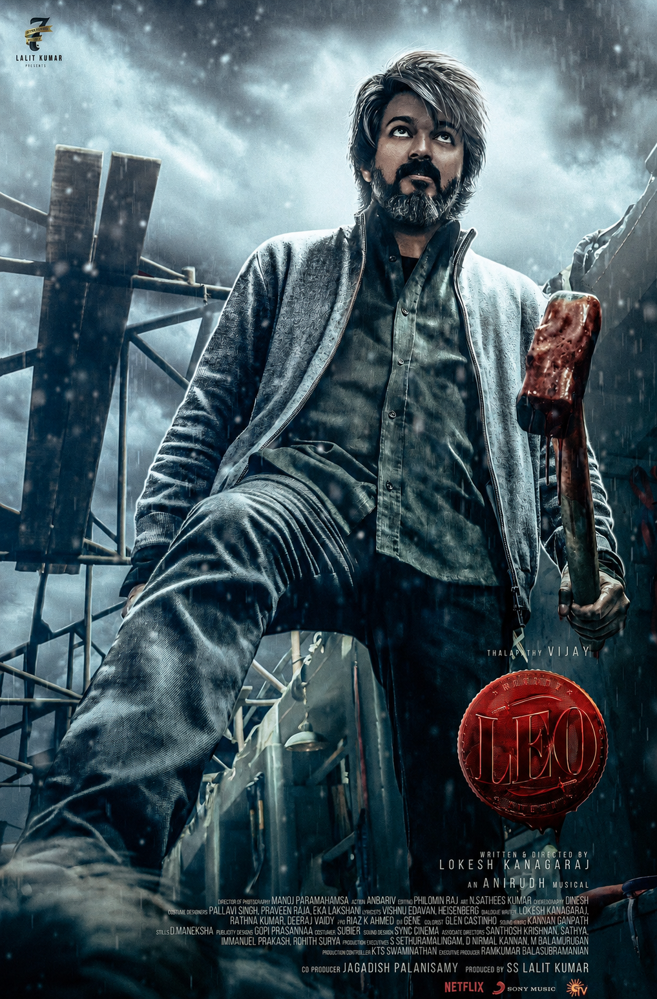
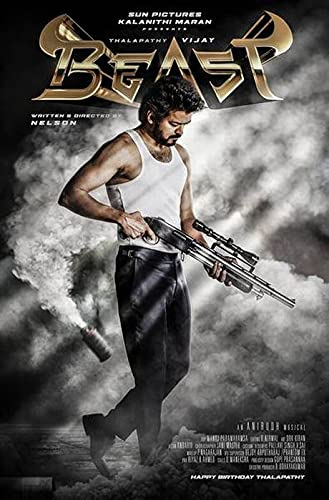
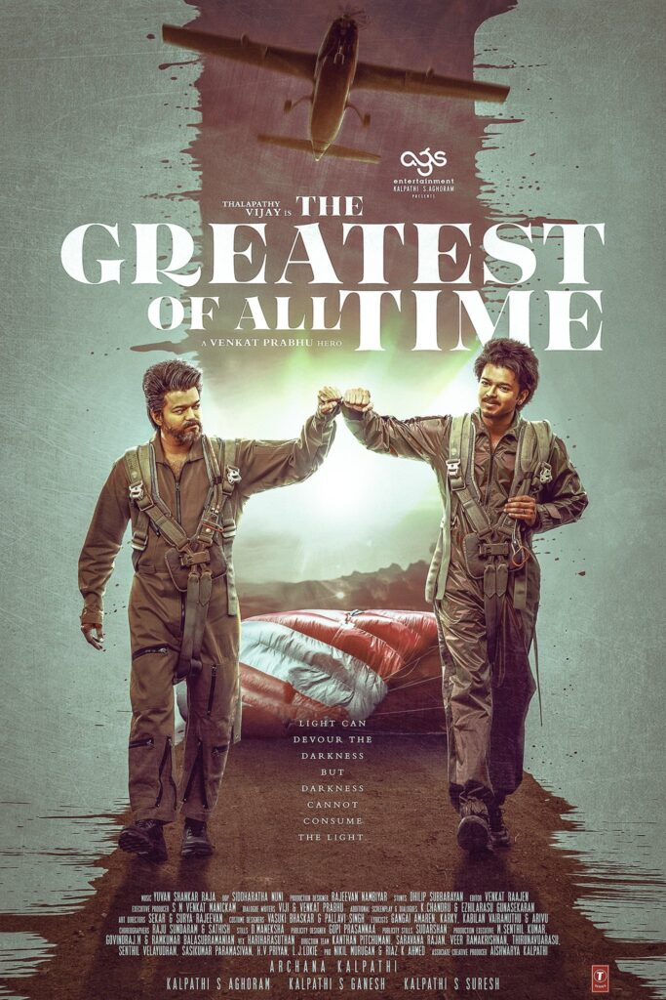
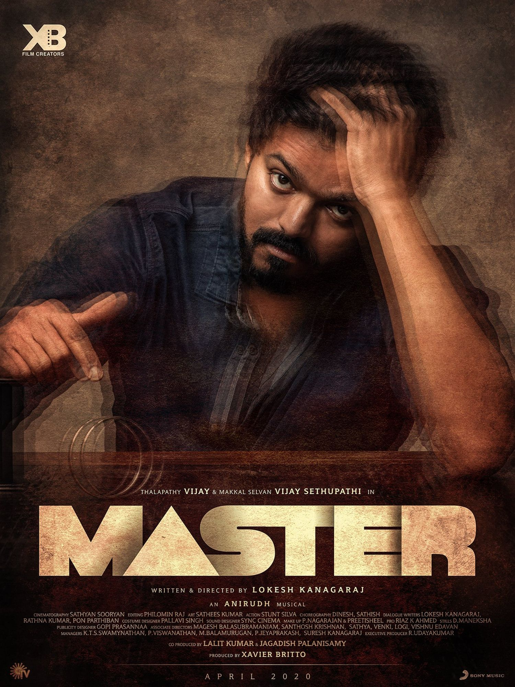

Parthiban, a café owner, lives with his wife and son in Himachal Pradesh. Things take an absurd turn for him when he gets in the way of a drug cartel.

Former RAW agent Veera must face his fears when a terrorist organisation holds him hostage in a mall along with other visitors and demands the release of their leader, who was captured by Veera.

The Greatest of All Time - 2024 - Gandhi is a hostage negotiator, field agent, and spy working for the Special Anti-Terrorist Squad (SATS). After years of service, he is called back for a critical mission that sets him on a dangerous collision course with his own past.

An alcoholic professor is enrolled to teach at a juvenile facility, unbeknownst to him. He soon clashes with a ruthless gangster, who uses the children as scapegoats for his crimes.
